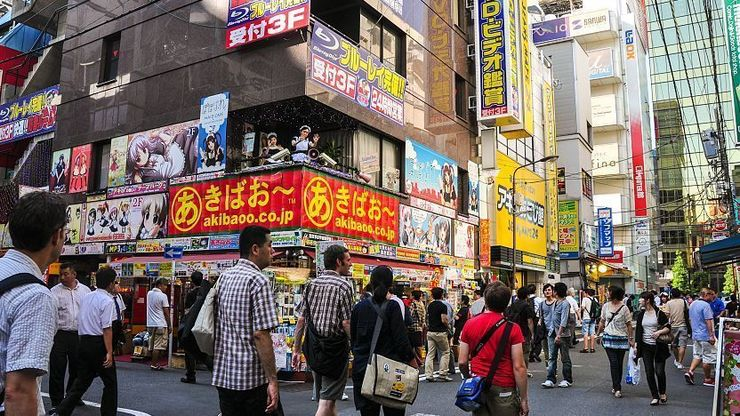

Akihabara
秋葉原

Akihabara (秋葉原), also called Akiba after a former local shrine, is a district in central Tokyo that is famous for its many electronics shops and has also gained recognition as the center of Japan's otaku (diehard fan) culture. Many shops and establishments devoted to anime and manga are dispersed among the electronic stores in the district. On Sundays, Chuo Dori, the main street through the district, is closed to car traffic from 13:00 to 18:00 (until 17:00 from October through March).
Akihabara has seen some redevelopment over the past years, which added some large, modern buildings to the mix of small to medium-sized shops and buildings. Most prominent among them is a huge Yodobashi electronics store just next to the station.
